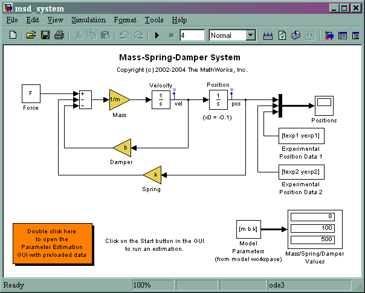
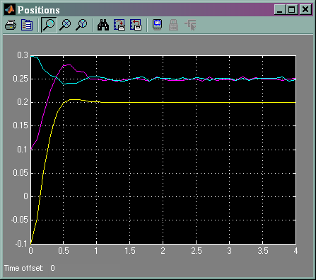
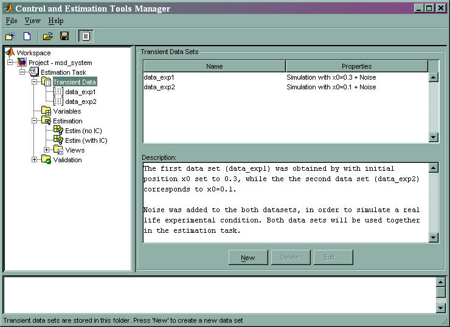
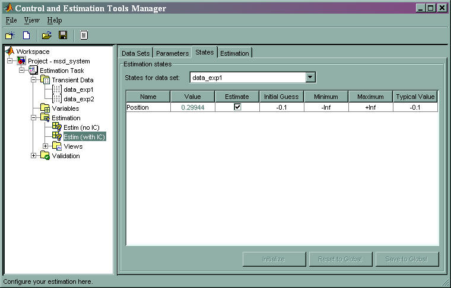
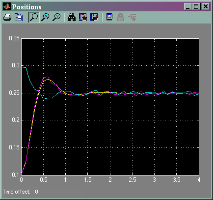

This demo takes us through the estimation of the physical parameters - mass (m), spring constant (k) and damping (b) of a simple mass-spring-damper model. This demo illustrates the significance of initial state estimation in the parameter estimation process using the Simulink Parameter Estimation GUI.
The Simulink model for the system is shown below.
open_system('msd_system')
The model's output is the displacement response (position) of the mass in a mass-spring-damper system, subject to a constant force (F), and an initial displacement (x0). x0 is indicated by the initial condition of the Position integrator block. Run the simulation once to observe the response of the model to a nominal set of parameter values.

For the estimation of the model parameters (m, b and k), two sets of experimental data will be used. These data sets were obtained using two different initial positions (0.1 and 0.3), and contain additive noise. A plot of these data sets is shown below (magenta and cyan curves), along with the simulated response (yellow curve) of the Simulink model msd_system for x0=-0.1 and a nominal set of parameter values (m=8, k=500, b=100).

The model has three parameters - k, b and m, that appear in the Gain blocks of the Simulink model msd_system. We can estimate these parameters using a Simulink Parameter Estimation project. Double-clicking on the link block (lower left corner of the model) opens the estimation project. The experimental data sets are already loaded in the project (data_exp1 and data_exp2 under Transient Data node).

Parameter Estimation with No State Estimation
We have two estimation tasks set up under the Estimation node. The initial parameter value guesses are set to m=8, k=500 and b=100 for both the tasks. In the first task (Estim(no IC)), the initial position x0 is not chosen for estimation, and its value is fixed, arbitrarily to -0.1. This estimation task can be run by clicking on the Start button of the Estimation tab corresponding to the Estim(no IC) estimation task. The progress of the estimation, over successive iterations, can be observed on the model's Scope block, by observing the estimated response (yellow) against the experimental data sets (cyan and magenta lines).
Since the initial position is fixed (not estimated), the estimated position response always begins at -0.1, even though the initial positions for the experimental data are different. As a result, the estimated response never appears to converge towards the experimental responses. This in turn implies poor estimates of model parameters.
Parameter Estimation with State Estimation
Next, let us carry out the same estimation, but this time also estimating the model's initial position (x0) state. While the initial velocity is also a state of the model, we assume (for simplicity) that it is known to be zero and do not consider it in this project. The estimation task for this case is Estim(with IC). The Position state is chosen for estimation by checking the checkbox on the States tab for this task (as shown in the figure below). The initial position estimates for the two data sets will be different. The initial state guesses for both datasets is set to -0.1.

We carry out this estimation starting with the same initial parameter value guesses. As the estimation proceeds, the most current estimation of position response (yellow curve) updates itself in the Scope. The curve appears to toggle between the two experimental data sets, since the estimator uses the two sets successively to update the estimates of the parameter values. This time the estimator converges to the correct parameter values, within the scope of experimental noise and optimization options settings, as indicated by the closeness of the estimated response (yellow) to the experimental data (magenta). Good state estimates for the initial position are also obtained, as can be observed from the States tab of Estim(with IC) estimation task.

We conclude the estimation of initial states is important for obtaining the correct estimates of the model parameters. We may ask why we did not set the initial states (x0 in our case) as parameters as well. The reason is that, fundamentally, the initial states are not fixed physical properties of the system. For different experimental data or operating conditions, these states need not be unique. In our example, we used two data sets, with distinct initial positions, together for a single estimation of model parameters. While the estimates of the model parameters are unique, the initial state (position) is different, and is estimated individually for each data set.